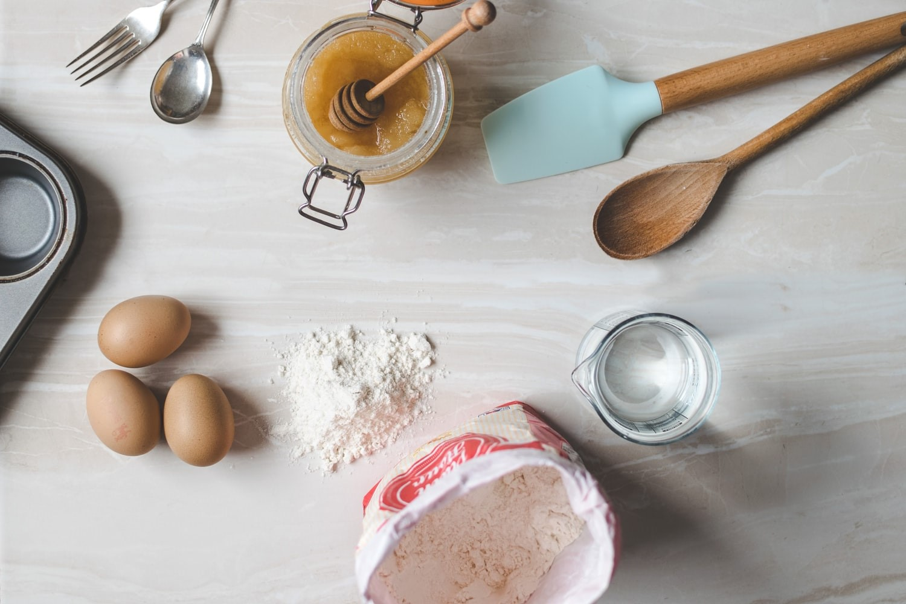

Hello! My name is Evena and I'm a student from faculty of Information Management in UiTM Sarawak. All of the UiTM student now are currently finishing their semester with online classes and exams. Besides, we also did our assignment and tutorial all through online.
There's a variety of things we have did during the MCO because we have a lot of free and leisure times at home. But most of the times, me and my sister always do the baking because my family loves to eat. Each week we will try to bake another recipe and my mother guide us doing the baking because she gave us the recipe. And of course we did bake a lot of cake and cookies.
One of our favourite among all of the baking that we have done so far is, do brownies. Doing brownies are so easy and it's a sweet thing to eat plus, all of my family loves to eat it. We been doing it for each week that I feel like I want to sell it to my friends and making a delivery. because we been staying at home and it's a good thing to do an income.

This is one of the brownies that we have done. This is one was a mix with hazelnut chocolate.